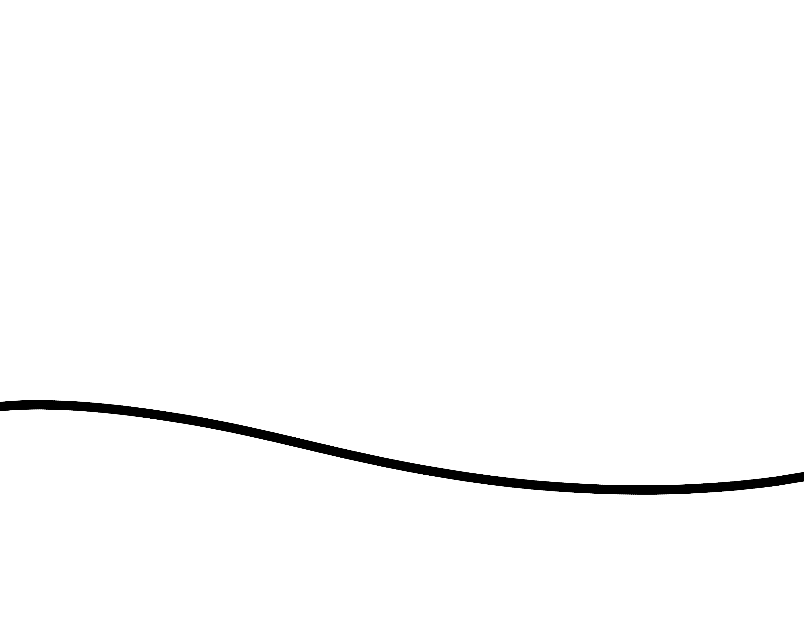
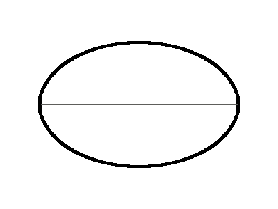
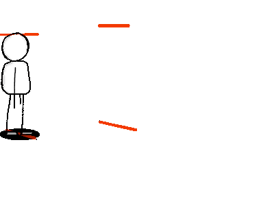

 a fairly basic (and low framerate) illustration of two circles or balls being animated, it's kind of a basic thing but was hard to do in Krita regardless. If you watch the animation you can see my timing was off towards the end and the ball appears to slow down as it flies off frame
 this was a much earlier test I did in Krita, experimenting with some of the guide/assistant tools. Believe it or not the Oval shape there is staying perfectly still, the only thing "moving" are the lines that criss-cross it.
 this is a fairly simple walk-test style animation I made in Krita, this was, I think at least one of the first one's I actually exported to an animated .gif format, the process involved combining krita with another program ffmpeg